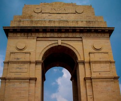
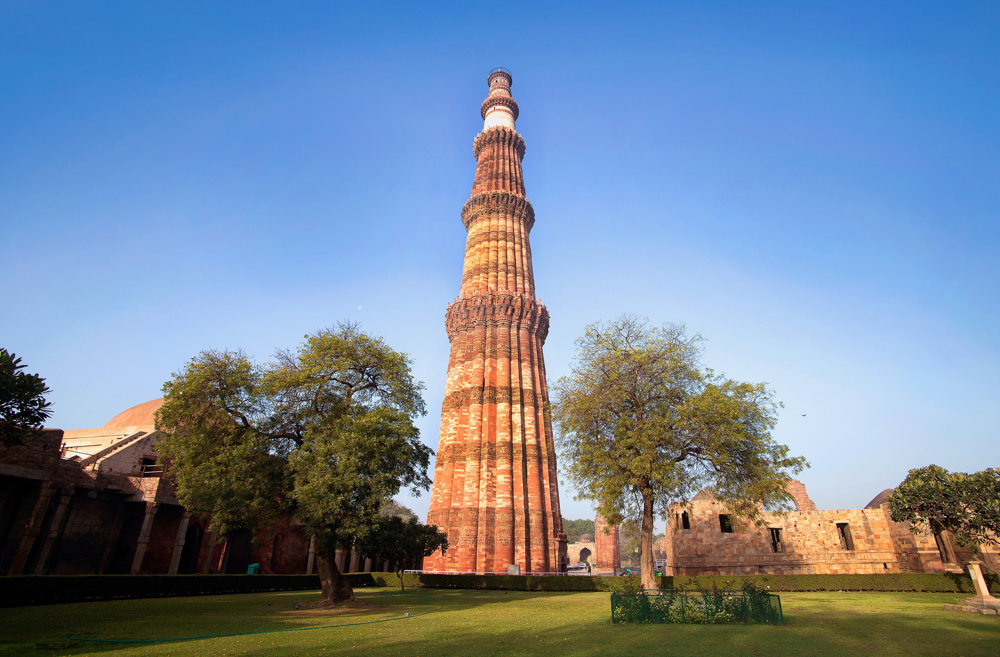

Delhi, officially the National Capital Territory (NCT) of Delhi, is a city and a union territory of India containing New Delhi, the capital of India.
Delhi is a historic, diverse, and dynamic city with a mix of old-world charm and modernity
Delhi became a union territory on 1 November 1956 and the NCT in 1995.
It boasts a rich cultural heritage and historical landmarks.
India Gate

India Gate is a prominent and iconic war memorial located in the heart of New Delhi.
It stands as a symbol of national pride and commemorates the soldiers of the Indian Army who sacrificed their lives in various conflicts, particularly in World War I.
The monument holds deep historical and emotional significance for the people of India.
Location:
India Gate is situated at the eastern end of Rajpath, a ceremonial boulevard in New Delhi.
It is aligned with the Rashtrapati Bhavan (the President's House) on one end and the National Stadium on the other, forming an important axis in the city's planning.
Architectural Design:
The design of India Gate is attributed to Sir Edwin Lutyens, a renowned British architect who played a significant role in planning New Delhi during the British rule.
The monument is a triumphal arch, reminiscent of the Arc de Triomphe in Paris, but with distinct architectural elements that reflect India's cultural and historical identity.
Construction:
The foundation stone of India Gate was laid in 1921, and it was completed in 1931.
The monument is made of sandstone and stands at a height of 42 meters.
Inscription:
The India Gate bears the names of more than 13,500 British and Indian soldiers who lost their lives in the Northwestern Frontier in the Afghan war of 1919 and in the First World War.
An Amar Jawan Jyoti (the Flame of the Immortal Soldier) was added later as a tribute to the Unknown Soldier, representing the soldiers who sacrificed their lives in subsequent conflicts.
Amar Jawan Jyoti:
The Amar Jawan Jyoti is a perpetual flame that burns day and night under the arch of India Gate.
It serves as a memorial to honor the soldiers who died in the Indo-Pakistani War of 1971.
Symbolism:
India Gate symbolizes the valor and sacrifice of Indian soldiers and serves as a reminder of the country's military history.
The memorial is the site of annual events on Republic Day, including the President's visit to pay homage to the soldiers.
Tourist Attraction:
India Gate is a major tourist attraction, drawing both locals and international visitors.
The surrounding area is a popular spot for picnics, leisurely walks, and cultural events.
India Gate, with its architectural elegance and historical significance, remains an enduring symbol of India's rich heritage and the sacrifices made by its armed forces. It stands as a tribute to the indomitable spirit of the nation.
Qutub Minar

Qutub Minar is a UNESCO World Heritage Site located in Delhi, India.
It is one of the most iconic and tallest brick minarets in the world.
Construction Period:
Construction began in 1192 by Qutub-ud-din Aibak, the first ruler of the Delhi Sultanate.
Completed by Iltutmish, Aibak's successor, and later enhanced by subsequent rulers.
Architectural Style:
Blend of Persian and Indian architectural styles.
Red sandstone and marble are the primary construction materials.
Height and Structure:
Stands at a height of 73 meters (240 feet).
Consists of five distinct stories, each marked by a projecting balcony.
Inscriptions:
The tower is adorned with intricate inscriptions in Arabic and decorative motifs.
Qutub Complex:
Qutub Minar is part of the Qutub Complex, which includes several other historical structures like the Quwwat-ul-Islam Mosque and the Iron Pillar of Delhi.
Purpose and Symbolism:
Initially built as a victory tower to celebrate the triumph of Muslim rule in Delhi.
The tower might have been used for the muezzin (the person who calls to prayer) to call the faithful to prayer.
Destruction and Reconstruction:
The Qutub Minar has faced damage and destruction over the centuries due to earthquakes.
It has been restored and repaired multiple times, with the uppermost story being reconstructed by Firoz Shah Tughlaq.
Decorative Elements:
Elaborate carvings and calligraphy on the minaret.
The balconies are adorned with intricate geometric patterns and verses from the Quran.
Rashtrapati Bhavan:
Rashtrapati Bhavan, formerly known as the Viceroy's House, is the official residence of the President of India.
Located at the western end of Rajpath in New Delhi, it is one of the largest presidential residences in the world.
Architectural Design:
Designed by Sir Edwin Lutyens, the British architect, and Herbert Baker.
Represents a blend of Indian and Western architectural styles.
Construction Period:
Construction began in 1912 and was completed in 1929.
The building was the official residence of the Viceroy during the British colonial period.
Structure and Layout:
The Rashtrapati Bhavan covers an area of 320 acres and has a floor area of 200,000 square feet.
The building has four floors and 340 rooms.
Mughal Gardens:
The Rashtrapati Bhavan is surrounded by the beautiful Mughal Gardens, which are open to the public during certain times of the year.
The gardens showcase a variety of flowers, plants, and fountains.
Durbar Hall:
The Durbar Hall, with its impressive dome and chandeliers, is used for official ceremonies and state functions.
It houses a large ceremonial space and the President's throne.
Presidential Residence:
The Rashtrapati Bhavan serves as the official residence of the President of India.
It is also the venue for various official events and ceremonies.
Change of Guard Ceremony:
The Change of Guard ceremony at the Rashtrapati Bhavan is a popular attraction for tourists.
It takes place every Saturday and is a grand display of military precision.